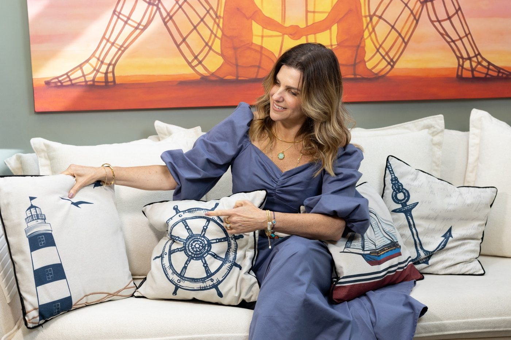

Odisseia · Todos a Bordo
Escolha um baralho. Toque numa carta para ampliar e virar, ou no + para colocá-la na sua seleção. As cartas escolhidas de todos os baralhos aparecem juntas em Minhas cartas.
Minhas cartasMesa de jogoPacientesSobre a autora

Quem conduz o lemePriscila TenenbaumPsicóloga, terapeuta do esquema e criadora do Odisseia · conheça a história ›Termos de uso e privacidade · © Editora ASA · Priscila Tenenbaum
Termos de uso e privacidade
Versão de outubro de 2026 · Editora ASA
1. O que é o ODISSEIA
O ODISSEIA é um conjunto de cartas, tabuleiros e materiais de apoio para psicoterapeutas, com base na Terapia do Esquema e na ACT. É uma ferramenta de trabalho para profissionais habilitados. Não faz diagnóstico, não indica tratamento e não substitui a avaliação, o julgamento clínico nem a supervisão do profissional que o utiliza.
2. Onde ficam os dados dos pacientes
A Editora ASA não recebe, não acessa e não armazena os dados de pacientes registrados no app: nomes, anotações, cartas escolhidas ou histórico de sessões.
3. Sua responsabilidade como terapeuta
- Pela Lei Geral de Proteção de Dados (LGPD), você é quem decide o que registrar sobre cada paciente e responde por esses dados, inclusive pelo sigilo previsto no Código de Ética Profissional do Psicólogo.
- Prefira apelido ou iniciais. Não registre documentos, endereço, telefone ou outros dados que identifiquem o paciente.
- Proteja o aparelho com senha e evite usar o app em computadores compartilhados ou em janela anônima (nela, os dados se apagam ao fechar).
- O app não substitui o registro documental e o prontuário exigidos pelo Conselho Federal de Psicologia. Mantenha o seu prontuário oficial à parte.
4. Cópias de segurança e perda de dados
Limpar os dados do navegador, trocar de aparelho, reinstalar o navegador ou usar outro endereço do app pode apagar ou esconder os pacientes salvos. A Editora ASA não tem como recuperá-los. Use Pacientes › Baixar cópia com frequência. O arquivo de cópia não é protegido por senha: guarde-o em local seguro e apague cópias antigas que não forem mais necessárias.
5. Excluir dados
O botão Excluir apaga o paciente deste app. Cópias de segurança já baixadas continuam no lugar onde você as salvou e devem ser apagadas por você.
6. Direitos autorais
Cartas, ilustrações, tabuleiros, textos, nomes de personagens e o método ODISSEIA são de autoria de Priscila Tenenbaum e da Editora ASA, protegidos pela Lei de Direitos Autorais (Lei 9.610/98). A compra dá direito de uso individual na sua prática clínica. Não é permitido copiar, redistribuir, revender ou publicar o material, total ou parcialmente, sem autorização por escrito.
7. Atualizações
Estes termos podem ser atualizados. Quando isso acontecer, o app pedirá uma nova confirmação antes de você continuar cadastrando pacientes.
8. Contato
Dúvidas sobre estes termos: fale com a Editora ASA pelos canais oficiais.
Pacientes
Cada paciente tem a própria mesa: as cartas escolhidas, onde estão nos dois tabuleiros e as anotações. Tudo é salvo sozinho enquanto você trabalha. Ao final, toque em Encerrar sessão para registrar a data e as anotações no histórico.
Verificando onde salvar…
Antes de cadastrar pacientes
Novo paciente
Cópia de segurança
Toque numa carta da barra de baixo e depois no espaço do tabuleiro onde ela vai. No computador, também dá para arrastar. Toque numa carta da mesa para virar; o × devolve a carta para a barra. Use os botões acima do tabuleiro para aproximar uma área.
Anotações desta sessão
Trajetória
Psicóloga clínica no Rio de Janeiro, Priscila dedica sua prática à Terapia do Esquema e à Terapia Cognitivo-Comportamental, atendendo crianças, adolescentes, adultos e famílias. No consultório, aprendeu que as pessoas raramente mudam por entender melhor o que sentem, e sim por viver, na relação terapêutica, uma experiência nova e segura.
Ao lado da clínica, construiu uma trajetória como formadora de terapeutas: ensina Terapia do Esquema na pós-graduação em TCC da PUC-Rio e coordena, com Veruska Santos, a Formação Clínica em Terapia do Esquema Contextual. É fundadora do Espaço ASA · Resiliência para Vida e da Editora Asa, onde transforma o que funciona no consultório em materiais para outros terapeutas.
Por que criei o Odisseia
Os modos esquemáticos são uma das ideias mais potentes da Terapia do Esquema e, ao mesmo tempo, uma das mais abstratas. Na clínica, percebi que meus pacientes compreendiam o conceito, mas tinham dificuldade de reconhecê-lo no calor do momento. Faltava algo que pudesse ser visto, tocado e nomeado.
O mar ofereceu essa linguagem. O mundo interno virou oceano; os modos ganharam rosto como marujos de uma tripulação; as vozes críticas viraram capitães; os valores, ilhas no horizonte; e as necessidades emocionais, constelações para orientar a rota. Integrando a Terapia do Esquema à Matrix da ACT, o Odisseia convida cada pessoa a perceber quem está no leme agora e a escolher, com o Navegador, uma direção que tenha sentido.
O jogo nasceu para o Congresso Wainer e cresceu no consultório, carta a carta, com cada paciente que embarcou comigo. Hoje ele é um convite para que terapeutas e pacientes façam essa travessia juntos.
Todos a bordo.
Diário de Bordo
As 18 lendas dos mares interiores, do Capitão J. Young. Toque na metade direita da página para avançar e na esquerda para voltar.